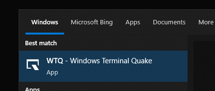
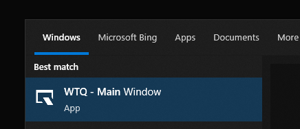
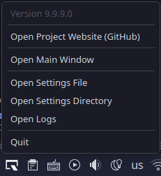
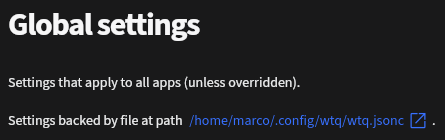
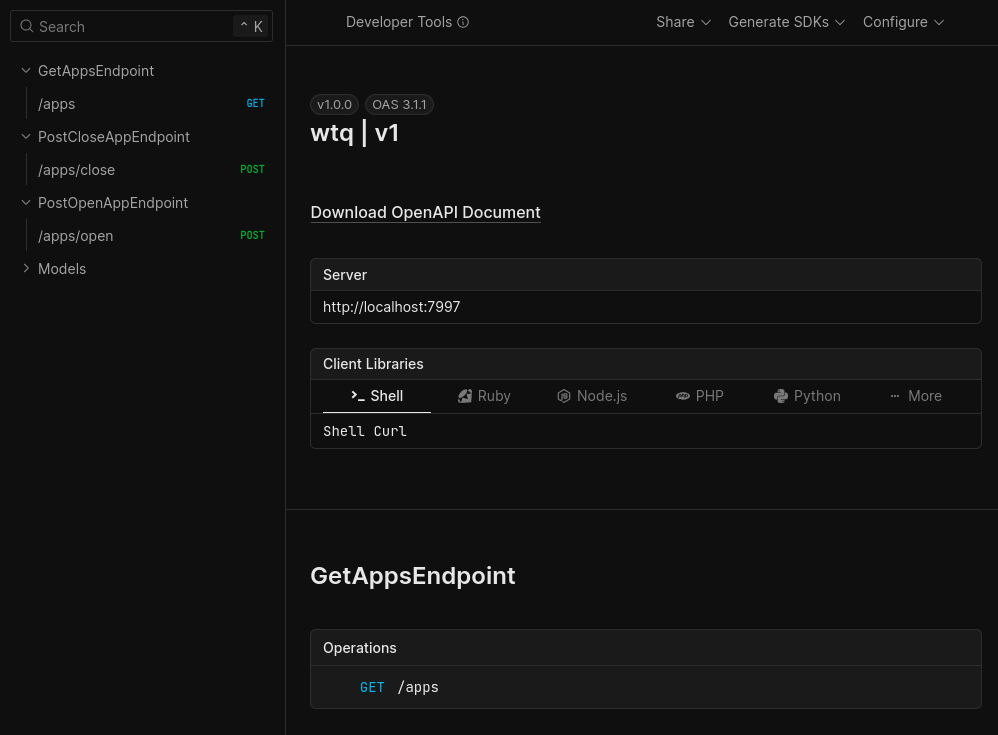

About¶
Welcome to the WTQ docs!
WTQ runs in the background, and enables sliding applications on- and off the screen, Quake style.
Supports:
- Windows 10 and 11
- KDE Plasma 5 & 6 (Wayland only)
See Installation to get started.
Here's an example where WTQ runs on Windows 11, toggling Windows Terminal, Q-Dir, Process Explorer and KeePassXC.
And here's one on KDE Plasma 6, toggling WezTerm, Dolphin System Monitor and KeePassXC.
Why "Quake" Style
The game Quake (by id Software) is generally considered the game that popularized toggling of the console onto the screen, by sliding it from the top. See this video for an example of what that looked like.
The "WTQ" Name
WTQ initially started as a companion app for Microsoft's thrilling sequel to the classic command prompt; Windows Terminal. Fit that with Quake-style toggling, and you get "Windows Terminal Quake".
Much later, support for other terminals was added, and support for toggling apps that were not terminals at all.
So now I refer to it as "WTQ", not having the balls to straight up rename it.
Installation¶
Windows¶
Scoop¶
A command-line installer for Windows.
Note
The WTQ Scoop package has moved to the Scoop extras bucket.
A shortcut is then available named WTQ - Windows Terminal Quake, or you can just run wtq from a command line or Win+R.

Start menu entry after installation.
Update (just WTQ):
WinGet¶
You can then call "wtq" from the command line.
After having done that at least once, a shortcut will appear in the start menu, called WTQ - Main Window.

Start menu entry after installation.
Update (just WTQ):
Where's WTQ Installed?
You can run
To find out where apps are installed:
Manual¶
See the latest release, and pick a zip.
- Self-Contained
Slightly larger, but does not require dependencies to be installed (i.e. .Net). - Framework-Dependent
Smaller, but requires .Net 10 to be installed.
Build From Source¶
Dependencies
- Requires the .Net 10 SDK to be installed
You can also clone the repo and run the Install build target, which will build and install WTQ: ~/AppData/Local/wtq.
git clone https://github.com/flyingpie/windows-terminal-quake.git
cd windows-terminal-quake
./build.ps1 Install
Uninstall:
You can also take a look at the build options, do see more options for building, including without actually installing:
Linux¶
Arch AUR¶
Multiple versions are published to the Arch User Repository (AUR):
wtq-bin (Recommended)¶
- Latest stable release, pre-built;
- Downloads from GitHub Releases;
- Quicker to install and minimal dependencies.
or
wtq¶
- Latest stable release, built from source;
- Purist open source, but takes a bit longer to install and has a bit more (build-time) dependencies.
or
Flatpak¶
Since WTQ only supports KDE Plasma on Linux, it's not a great fit for Flathub.
As an alternative, you can use the Flatpak remote hosted on the sister repository. It uses the Flatter GitHub Action for building the Flatpak itself, and everything is hosted on GitHub Pages.
The app itself and the Flatpaks are built entirely from source, using GitHub Actions, in the open.
Per-User¶
flatpak --user remote-add flyingpie https://flatpak.flyingpie.nl/index.flatpakrepo
flatpak --user install nl.flyingpie.wtq
System-Wide¶
flatpak remote-add flyingpie https://flatpak.flyingpie.nl/index.flatpakrepo
flatpak install nl.flyingpie.wtq
These permissions are enabled by default:
--socket=wayland # (required) So we can run the GUI
--talk-name=org.kde.KWin # (required) So we can talk to KWin for querying windows
--talk-name=org.kde.StatusNotifierWatcher # (required) So we can create a tray icon
--talk-name=org.freedesktop.Flatpak # (optional) So we can start processes (e.g. "flatpak-spawn --host dolphin")
Manual¶
Dependencies
- Requires webkit2gtk-4.1 to be installed
See the /linux/install-or-upgrade-wtq.sh script that downloads the latest version of WTQ, installs it to ~/.local/share/wtq, and creates a wtq.desktop file.
As a 1-liner:
bash <(curl -s https://raw.githubusercontent.com/flyingpie/windows-terminal-quake/refs/heads/master/pkg/linux/install-or-upgrade-wtq.sh)
And the /linux/uninstall-wtq.sh uninstall script.
bash <(curl -s https://raw.githubusercontent.com/flyingpie/windows-terminal-quake/refs/heads/master/pkg/linux/uninstall-wtq.sh)
Settings File Remains
The WTQ settings are not removed by this script. These are usually located at ~/.config/wtq, also see Settings.
Build From Source¶
Dependencies
- Requires the .Net 10 SDK to be installed - Requires webkit2gtk-4.1 to be installed
You can also clone the repo and run the Install build target, which will build and install WTQ at ~/.local/share/wtq (respects XDG spec).
git clone https://github.com/flyingpie/windows-terminal-quake.git
cd windows-terminal-quake
./build.sh Install
Uninstall:
You can also take a look at the build options, do see more options for building, including without actually installing:
Examples¶
TODO
GUI¶
TODO
Hotkeys, Keys and KeyChars¶
Keys can be specified in 2 ways:
- A virtual key code (the Key property). Generally the preferred method on Windows.
This maps to the physical key on the keyboard, regardless of what character it produces.
The hotkey system on Windows sends virtual key codes to WTQ (and not what character it produces). So on Windows, binding on virtual key codes generally works best (as no additional transformations are necessary).
Key codes are also mapped to key characters, so the KeyChar property usually still works. But this has some limitations, such as likely needing to restart WTQ when switching keyboard layouts. Hence it's recommended to use Key on Windows, which stays closer to the events Windows is sending.
- A key character (the KeyChar property). Generally the preferred method on Linux.
This maps to the produced character, regardless of what physical key was pressed.
On Linux, hotkey presses are sent to WTQ as typed characters, taking the keyboard layout into account. So on Linux, binding on key characters generally works best (as no additional transformations are necessary).
Key characters are also mapped to key codes, so the Key property usually still works. But this has limitations when the keyboard layout differs from US ANSI, where virtual key codes are based on. Hence it's recommended to use KeyChar on Linux, which stays closer to the events Linux is sending.
Note
The GUI can be helpful in figuring out what codes- or characters to use here.
See this issue for more information on why the split exists.
See Global Hotkeys to configure hotkeys that trigger the most recent app, and App Hotkeys that trigger a specific app.
{
"Hotkeys": [
//
// Using virtual key codes (recommended on Windows)
//
// CTRL+Q
{ "Modifiers": "Control", "Key": "Q" }
// CTRL+1
{ "Modifiers": "Control", "Key": "D1" }
// CTRL,ALT+1
{ "Modifiers": "Control,Alt", "Key": "D1" },
// CTRL,SHIFT+Q
{ "Modifiers": "Control,Shift", "Key": "Q" },
// All modifiers ("Super" also being known as "Meta", or the "Windows" key)
{ "Modifiers": "Alt,Control,Shift,Super", "Key": "Q" }
//
// Using key characters (recommended on Linux)
//
// CTRL+Q
{ "Modifiers": "Control", "KeyChar": "Q" }
// CTRL+1
{ "Modifiers": "Control", "KeyChar": "1" },
// CTRL,ALT+1
{ "Modifiers": "Control,Alt", "KeyChar": "1" },
// CTRL,SHIFT+Q
{ "Modifiers": "Control,Shift", "KeyChar": "Q" },
// All modifiers ("Super" also being known as "Meta", or the "Windows" key)
{ "Modifiers": "Alt,Control,Shift,Super", "KeyChar": "Q" }
]
// ...
}
Settings¶
Settings are stored in a JSON file, usually named wtq.jsonc.
The file can use the extension .json, .jsonc or .json5. The latter two are supported, so that editors like VSCode automatically switch to "JSON with Comments", making working with comments nicer.
Settings File Locations¶
Where's My Settings File?
The file can be in several places, to support different use cases and preferences.
You can quickly open either the settings file, or the directory that contains the settings file by clicking the tray icon -> Open Settings File, or Open Settings Directory.

Tray icon menu options.
Additionally, it's also displayed in the GUI, with a link for convenience.

Settings location in the GUI.
On Windows¶
These locations are considered, in order:
- A path defined by an environment variable named
WTQ_CONFIG_FILE(regardless of filename or extension) - Next to the WTQ executable
- When using Scoop:
C:\Users\username\scoop\apps\wtq-latest\current - When using WinGet:
C:\Users\username\AppData\Local\Microsoft\WinGet\Packages\flyingpie.windows-terminal-quake_Microsoft.Winget.Source_8wekyb3d8bbwe - Or wherever else the
wtq.exefile is
- When using Scoop:
- In %USERPROFILE%\.config
C:\users\username\.config\wtq.json
- In user home
C:\users\username\wtq.json
- In user home, as a dot file
C:\users\username\.wtq.json
- In app data
C:\users\username\AppData\Roaming\wtq\wtq.json
If no settings were found at any of these locations, WTQ creates a settings file at C:\Users\username\AppData\Roaming\wtq\wtq.jsonc.
On Linux¶
These locations are considered, in order:
- A path defined by an environment variable named
WTQ_CONFIG_FILE(regardless of filename or extension) - Next to the WTQ executable
- When using the install script:
/home/username/.local/share/wtq
- When using the install script:
- In
$XDG_CONFIG_HOME, if defined (following to the XDG spec)/home/username/.config/wtq.json
- In ~/.config (the default for XDG_CONFIG_HOME, if is it not defined)
/home/username/.config/wtq.json
- In user home
/home/username/wtq.json
- In user home, as a dot file
/home/username/.wtq.json
If no settings were found at any of these locations, WTQ creates a settings file at $XDG_CONFIG_HOME: /home/username/.config/wtq/wtq.jsonc.
TODO
TODO: Mention wtq.schema.json
Global options¶
Defines WTQ-wide options, including the list of configured apps.
Note that you can also use shared options here.
General¶
Apps¶
Applications to enable Quake-style dropdown for.
{
"Apps": [
{
"Name": "App 1"
// (App settings here)
},
{
"Name": "App 2"
// (App settings here)
}
// ...
]
}
Hotkeys¶
Global hotkeys, that toggle either the first, or the most recently toggled app.
Also note App Hotkeys, which handles hotkeys for a single particular app.
See Hotkeys, Keys and KeyChars for more information and examples.
API¶
WTQ comes with an HTTP API (**disabled** by default), that can be used to control WTQ programmatically.
See the HTTP API section for more information and usage examples.
Feature flags¶
Sometimes functionality is added or changed that carries more risk of introducing bugs.
For these cases, such functionality can be put behind a "feature flag", which makes them opt-in or opt-out.
That way, we can still merge to master, and make it part of the stable release version (reducing branches and dev builds and what not), but still have a way back should things go awry, without necessarily reverting to a previous version.
Show UI on start¶
Whether to show the GUI when WTQ is started.
Tray icon (color) style¶
The tray icon (color) style (dark/light).
Defaults to Auto
-
Auto
Attempt to detect the OS theme and use the appropriate style based on that (currently Windows only). -
Dark
Dark icon, works best on lighter themes. -
Light
Light icon, works best on darker themes.
Animation¶
Animation target FPS¶
How many frames per second the animation should be.
Note that this may not be hit if moving windows takes too long, hence "target" fps.
Must be between 5 and 120, to prevent issues that can arise with values that are too low or too high.
Defaults to 40
App options¶
Defines the options for a single toggleable app (eg. Windows Terminal, some other terminal, a file browser, etc.).
Note that you can also use shared options here.
App¶
Name¶
A logical name for the app, used to identify it across config reloads, and it appears in logs.
Hotkeys¶
One or more keyboard shortcuts that toggle in- and out this particular app.
Also note Global Hotkeys, which handles hotkeys that toggle the most recent app.
See Hotkeys, Keys and KeyChars for more information and examples.
Process¶
Filename¶
The **filename** to use when starting a new process for the app. If no ProcessName is set, the value of this property is also used to match against the names of running processes (to find the process to attach to).
E.g. **notepad**, **dolphin**, etc.
Note that (if the app is not in the OS PATH), you can also put absolute paths in here, or specify the working directory through WorkingDirectory.
Arguments¶
Command-line arguments that should be passed to the app when it's started.
Note that this only applies when using an **AttachMode** that starts the app.
This is mostly here for backward-compatibility reasons. Prefer ArgumentList, which handles complex arguments and escaping better.
Argument list¶
Command-line arguments that should be passed to the app when it's started.
Note that this only applies when using an **AttachMode** that starts the app (i.e., when WTQ actually starts the app).
Working directory¶
Working directory when starting a new process.
Useful if the **filename** isn't available through PATH.
{
"Apps": [
{
"WorkingDirectory": null | "/path/to/dir" | "C:/path/to/dir" | "C:\\path\\to\\dir"
// ...
}
]
}
Process name¶
Apps sometimes have **process names** different from their **filenames**. This field can be used to look for the process name in such cases. Windows Terminal is an example, with filename **wt**, and process name **WindowsTerminal**.
Supports regular expressions.
Also see Examples for more cases where this is relevant, and the GUI section on how to find values.
{
// Using with Windows Terminal requires both "Filename" and "ProcessName".
"Apps": [
{
"Filename": "wt",
"ProcessName": "^WindowsTerminal$"
// ...
}
]
}
Main window¶
(Windows only) Matches only "main" windows; the initial window a process spawns.
When a process spawns multiple windows, 1 is usually the "main" window. In many cases, this is also the window that you'd want to use WTQ with. Non-main-windows are usually child windows like popups and such. When the other (non-main) windows cannot be easily differentiated from the main window (for example through the window class or -title), the "is-main-window"-property can be very useful to home in on the desired window.
A common example of an app where this would **not** help, is a browser, that can spawn tons of windows on the same process name.
Defaults to Either
-
MainWindowOnly
Match main windows only. -
NonMainWindowOnly
Match non-main windows only. -
Either
Match main- and non-main windows.
Window class¶
(Windows only) Matches windows based on their Win32 Window Class.
Supports regular expressions.
Also see Examples for more cases where this is relevant, and the GUI section on how to find values.
Window title¶
Match windows based on their title (sometimes referred to as "caption").
Supports regular expressions.
Behavior¶
Window title override¶
Attempt to set the window title to a specific value.
Useful for cases where multiple programs control window placement (such as when using WTQ together with a window manager) and the window title can be used to opt-out in the other program.
Note that this doesn't work for all windows, as it depends on factors like the app's GUI toolkit.
Shared options¶
Options that are available both in global- and per-app options.
Process¶
Attach mode¶
How WTQ should get to an instance of a running app.
I.e. whether to start an app instance if one cannot be found.
Defaults to FindOrStart
-
Find
Only look for existing app instances (but don't create one). -
FindOrStart
Look for an existing app instance, create one if one does not exist yet. -
Manual
Attach to whatever app is in the foreground when pressing an assigned hotkey.
{
// Globally:
"AttachMode": "FindOrStart",
// For one app only:
"Apps": [
{
"AttachMode": "FindOrStart"
}
]
}
Behavior¶
Always on top¶
Whether the app should always be on top of other windows, regardless of whether it has focus.
{
// Globally:
"AlwaysOnTop": "False",
// For one app only:
"Apps": [
{
"AlwaysOnTop": "False"
}
]
}
Exclusive¶
When an app should be the only one on-screen, of all configured apps. Changing this allows multiple apps active at the same time.
Defaults to Always
-
Always
Toggle off app when another is toggled on. -
Never
Do not toggle off the app when another one is toggled on. Note that the other app also needs to be set to "Exclusive" = "Never".
{
// Globally:
"Exclusive": "Always | Never",
// For one app only:
"Apps": [
{
"Exclusive": "Always | Always"
}
]
}
Hide on focus lost¶
Whether the app should be toggled off when another app gets focus.
Defaults to Always
-
Always
Toggle off the app when focus is lost. -
Never
Do not toggle off the app when focus is lost.
{
// Globally:
"HideOnFocusLost": "Always",
// For one app only:
"Apps": [
{
"HideOnFocusLost": "Always"
}
]
}
Taskbar icon visibility¶
When to show the app window icon on the taskbar.
Defaults to AlwaysHidden
-
AlwaysHidden
Never show the taskbar icon. -
AlwaysVisible
Always show the taskbar icon (note that this can look a bit weird when the app is toggled off). -
WhenAppVisible
Only show the taskbar icon when the app is toggled on.
{
// Globally:
"TaskbarIconVisibility": "AlwaysHidden",
// For one app only:
"Apps": [
{
"TaskbarIconVisibility": "AlwaysHidden"
}
]
}
Opacity¶
Make the window see-through (applies to the entire window, including the title bar).
0 (invisible) - 100 (opaque).
Defaults to 100
Position¶
Resize app window¶
Whether to resize the app window when toggling onto the screen, to apply other settings like HorizontalScreenCoverage.
By setting this to "Never", the app window size will be maintained, effectively disabling some other settings (like the aforementioned HorizontalScreenCoverage).
This is useful for cases when resizing an app's window heavily impacts its contents, such as when resizing a window clears its contents (seems to be most common with Electron apps).
Defaults to Always
-
Always
Always resize the app window to match the alignment settings (like HorizontalScreenCoverage). -
Never
Never resize the app window, ignoring alignment settings (like HorizontalScreenCoverage). Useful for apps that don't respond well to resizes.
Horizontal screen coverage¶
Horizontal screen coverage, as a percentage.
Defaults to 95
{
// Globally:
"HorizontalScreenCoverage": "95",
// For one app only:
"Apps": [
{
"HorizontalScreenCoverage": "95"
}
]
}
Horizontal align¶
Where to position an app on the chosen monitor, horizontally.
Defaults to Center
-
Center
Center of the screen. -
Left
Left of the screen. -
Right
Right of the screen.
{
// Globally:
"HorizontalAlign": "Center",
// For one app only:
"Apps": [
{
"HorizontalAlign": "Center"
}
]
}
Vertical screen coverage¶
Vertical screen coverage as a percentage (0-100).
Defaults to 95
{
// Globally:
"VerticalScreenCoverage": "95",
// For one app only:
"Apps": [
{
"VerticalScreenCoverage": "95"
}
]
}
Vertical offset¶
How much room to leave between the top of the app window and the top of the screen, in pixels.
Off-screen locations¶
When moving an app off the screen, WTQ looks for an empty space to move the window to.
Depending on your monitor setup, this may be above the screen, but switches to below if another monitor exists there.
By default, WTQ looks for empty space in this order: Above, Below, Left, Right.
If no free space can be found in any of the specified locations, the app will just blink on- and off the screen, without any animation.
{
// Globally:
"OffScreenLocations": ["Above", "Below", "Left", "Right"],
// For one app only:
"Apps": [
{
"OffScreenLocations": ["Above", "Below", "Left", "Right"]
}
]
}
Monitor¶
Prefer monitor¶
Which monitor to preferably toggle the app onto.
Defaults to WithCursor
-
WithCursor
The monitor where the mouse cursor is currently at. -
AtIndex
The monitor at the index as specified by MonitorIndex (0-based). -
Primary
The monitor considered primary by the OS.
{
// Globally:
"PreferMonitor": "WithCursor",
// For one app only:
"Apps": [
{
"PreferMonitor": "WithCursor"
}
]
}
Monitor index¶
If **PreferMonitor** is set to **AtIndex**, this setting determines what monitor to choose.
Zero based, e.g. 0, 1, etc.
Animation¶
Animation duration¶
How long the animation should take, in milliseconds.
Defaults to 250
{
// Globally:
"AnimationDurationMs": "250",
// For one app only:
"Apps": [
{
"AnimationDurationMs": "250"
}
]
}
Animation type (toggle ON)¶
The animation type to use when toggling on an application.
Defaults to EaseOutQuart
-
Linear
-
EaseInOutSine
-
EaseInBack
-
EaseInCubic
-
EaseInQuart
-
EaseOutBack
-
EaseOutCubic
-
EaseOutQuart
{
// Globally:
"AnimationTypeToggleOn": "EaseOutQuart",
// For one app only:
"Apps": [
{
"AnimationTypeToggleOn": "EaseOutQuart"
}
]
}
Animation type (toggle OFF)¶
The animation type to use when toggling off an application.
Defaults to EaseInQuart
-
Linear
-
EaseInOutSine
-
EaseInBack
-
EaseInCubic
-
EaseInQuart
-
EaseOutBack
-
EaseOutCubic
-
EaseOutQuart
{
// Globally:
"AnimationTypeToggleOff": "EaseInQuart",
// For one app only:
"Apps": [
{
"AnimationTypeToggleOff": "EaseInQuart"
}
]
}
Events¶
Event hooks¶
Execute a program when some event occurs.
Event Hooks¶
When WTQ is running, various events occur, which can be hooked to trigger some action.
Event Hooks
For going the other direction, where you tell WTQ to do something, see HTTP API.
For example, to execute a script whenever an app is toggled on:
{
"EventHooks": [
{
"EventPattern": "AppToggledOn",
"FileName": "some-script",
"WorkingDirectory": "/path/to/script"
}
]
}
The EventPattern property accepts regular expressions. For example, to hook everything:
- AppToggledOn: Fired when an app is toggling onto the screen.
- AppToggledOff: Fired when an app is toggling off the screen.
Additionally, some environment variables are passed to the executed command:
- WTQ_EVENT_NAME: The name of the event that fired;
- WTQ_APP_NAME: The app that relates to the event, if any;
- WTQ_IS_SWITCHING: "True" if currently switching from one app to another;
Examples¶
Running a PowerShell script when toggling, to play a sound:
if ($env:WTQ_EVENT_NAME -eq "AppToggledOn")
{
if ($env:WTQ_IS_SWITCHING -eq "True")
{
# Don't do anything (see below)
}
else
{
$o = ffplay -nodisp -autoexit -loglevel -8 "C:/downloads/on.mp3" | Out-Null
}
}
if ($env:WTQ_EVENT_NAME -eq "AppToggledOff")
{
if ($env:WTQ_IS_SWITCHING -eq "True")
{
$o = ffplay -nodisp -autoexit -loglevel -8 "C:/downloads/switch.mp3" | Out-Null
}
else
{
$o = ffplay -nodisp -autoexit -loglevel -8 "C:/downloads/off.mp3" | Out-Null
}
}
And wtq.jsonc:
{
(...)
"EventHooks": [
{
"EventPattern": ".+",
"FileName": "pwsh",
"ArgumentList": [ { "Argument": "wtq-sound.ps1" } ],
"WorkingDirectory": "C:/downloads"
}
]
The same demo, but in Bash:
if [ $WTQ_EVENT_NAME = "AppToggledOn" ]; then
if [ $WTQ_IS_SWITCHING = "True" ]; then
# Don't do anything (see below)
else
ffplay -nodisp -autoexit ~/Downloads/on.mp3 &> /dev/null
fi
fi
if [ $WTQ_EVENT_NAME = "AppToggledOff" ]; then
if [ $WTQ_IS_SWITCHING = "True" ]; then
ffplay -nodisp -autoexit ~/Downloads/switch.mp3 &> /dev/null
else
ffplay -nodisp -autoexit ~/Downloads/off.mp3 &> /dev/null
fi
fi
And wtq.jsonc:
{
(...)
"EventHooks": [
{
"EventPattern": ".+",
"FileName": "bash",
"ArgumentList": [ { "Argument": "wtq-sound" } ],
"WorkingDirectory": "~/Downloads"
}
]
HTTP API¶
WTQ comes with an HTTP API (disabled by default), that can be used to control WTQ programmatically.
Opt-In
For clarity, the HTTP API is disabled by default. No socket is opened until enabled manually.
Event Hooks
For going the other direction, where WTQ notifies someone else, see Event Hooks.
Requires Restart
Making changes to this part of the settings requires a WTQ restart.
It can be enabled by setting Enable to true:
By default, the HTTP API is made available through a named pipe (//pipe:/wtq on Windows, /run/user/USERNAME/wtq/wtq.sock on Linux). This makes it such that no ports need to be allocated, and no ports are exposed externally.
Though because it can be useful to have a proper socket (for example to be able to use a browser or various HTTP clients), this can be changed using the Urls setting, for example localhost, on port 7997:
Once running, the API can be accessed with an HTTP client, or using the WTQ CLI.
The root address of the API will return an OpenAPI-driven documentation page, with all the available endpoints:

For example, using Curl to fetch all configured apps:
curl http://localhost:7997/apps | jq
{
"apps": [
{
"name": "KeePassXC",
"isAttached": true,
"isOpen": false
},
{
"name": "Dolphin",
"isAttached": true,
"isOpen": false
},
{
"name": "WezTerm",
"isAttached": true,
"isOpen": true
}
]
}
Or to open a specific app:
Building From Source¶
TODO
Architecture¶
TODO
graph LR
A[Start] --> B{Error?};
B -->|Yes| C[Hmm...];
C --> D[Debug];
D --> B;
B ---->|No| E[Yay!];